Decision Model and Notation (DMN) models
DMN models are decision models based on a notation standard defined by the Object Management Group (OMG). It uses graphical decision requirements diagrams (DRDs) that represent part or all of the overall decision requirements graph (DRG) to trace business decision flows, and uses an XML schema to enable sharing between standalone DMN Editor platforms. DMN Editor and DMN Editor (classic) are available in BAMOE Canvas, and BAMOE Developer Tools for VS Code and as standalone JavaScript libraries.
It supports Friendly Enough Expression Language (FEEL) to define decision logic in DMN Decision Tables and other DMN boxed expressions, and can be integrated efficiently with Business Process Model and Notation (BPMN) Workflow models. They are optimal for creating comprehensive, illustrative, and stable decision flows.
DMN Editor
Decision authoring on BAMOE Canvas happens inside the Editor page for Decisions, where you can edit, validate, run, and deploy DMN files. This version of DMN Editor is compatible with DMN 1.5. The 9.0.x editor remains available and is referred to as the DMN Editor (classic). By default, the DMN Editor will be opened when you first open BAMOE Canvas. Older DMN files can be opened directly in the DMN Editor; however, if they are edited and saved in this editor, they will no longer be compatible with the DMN Editor (classic).
Switching between DMN Editor and DMN Editor (classic)
You can switch between the two editors and your selected editor will be saved in the user preferences for future work.
To switch back to the DMN Editor you can click on Try the DMN Editor which will set the preference back to the DMN Editor.
Overview of DMN Editor capabilities
This section describes all aspects of the DMN Editor, its additional capabilities, followed by a detailed description of how to use them.
The DMN Editor can open and edit DMN files from version 1.5 or below, but it will always save as a DMN 1.5. The DMN Editor (classic) supports DMN version 1.2 with some additional 1.3 capabilities, making this a huge step in functionalities.
The following sections describe the DMN features, version by version, that are now supported in the DMN Editor.
version 1.3
The DMN Editor (classic) supported a subset of 1.3 features, such as the temporal FEEL Functions. The DMN Editor supports Group nodes which enable you to create groups on the Decision Requirements Diagram (DRD), providing a better way to organize and visualize the model.
version 1.4
The DMN Editor supports the following FEEL functions, Boxed Expression, and DRD representation available in DMN 1.4.
-
FEEL functions:
-
context -
context put -
context merge -
number floor -
number ceiling -
number round up -
number round down -
number round half up -
number round half down -
string join
-
-
Boxed Expressions:
-
Filter
-
Conditional
-
Iterator
-
Every
-
Some
-
-
DRD: Adds a marker on nodes that have a collection data type.
version 1.5
The DMN Editor supports new FEEL Functions, changes to the DRD and some general changes related to DMN 1.5.
-
FEEL Functions:
-
List replace
-
Scientific notation for numbers
-
-
DRD: A DRD option to provide an alternative representation of the Input Data node, which is more visually coherent with the BPMN model Changing the DRD option affects all Input Data nodes on the DRD. For more information see DRD.
Import to default namespace
Adds the possibility to import a DMN into the default namespace. This removes the necessity to give a name to the external model, enabling you to compose a complex model with multiple small models.
Visualizing missing dependencies
Unlike the DMN Editor (classic), DMN Editor provides a visual representation of nodes with missing dependencies in the current DRD. In the DMN Editor You can have multiple DRDs and not necessarily import all nodes. The following visual representation shows the missing requirements in the current DRD.
The Diagram and Boxed Expression Editor can be accessed via the Editor tab (A). The data types editor can be accessed via the Data Types tab (B) and included models can be managed via the Included Models tab ©.
Diagram
When you open the diagram for the first time, there are a few components to become familiar with.
-
Editor empty state (1): The editor empty state enables you to easily bootstrap a new model via two options: by creating a Decision node with a Decision Table or by creating a Decision with an Input Data node.
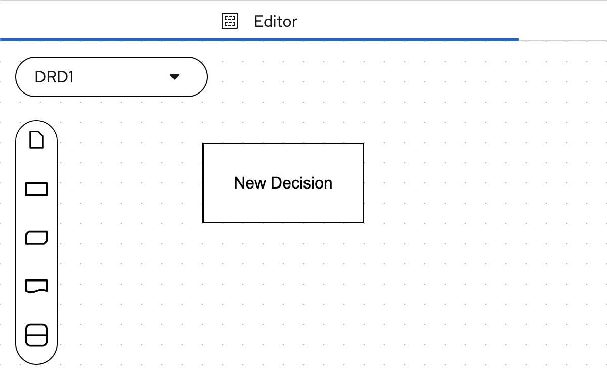Figure 9. Decision node with a Decision Table
-
Node Palette (2): You can use the Palette to interact with the DRD and DRG:
-
Add a new node to the DRD.
-
Use nodes from other DRDs.
-
Add nodes from external models.
-
Create artifact nodes to the DRD, improving documentation, organization, and visualization.
-
-
Add DRG node (2a): To add a new DRG node you drag the desired node from the palette and drop it into the diagram.
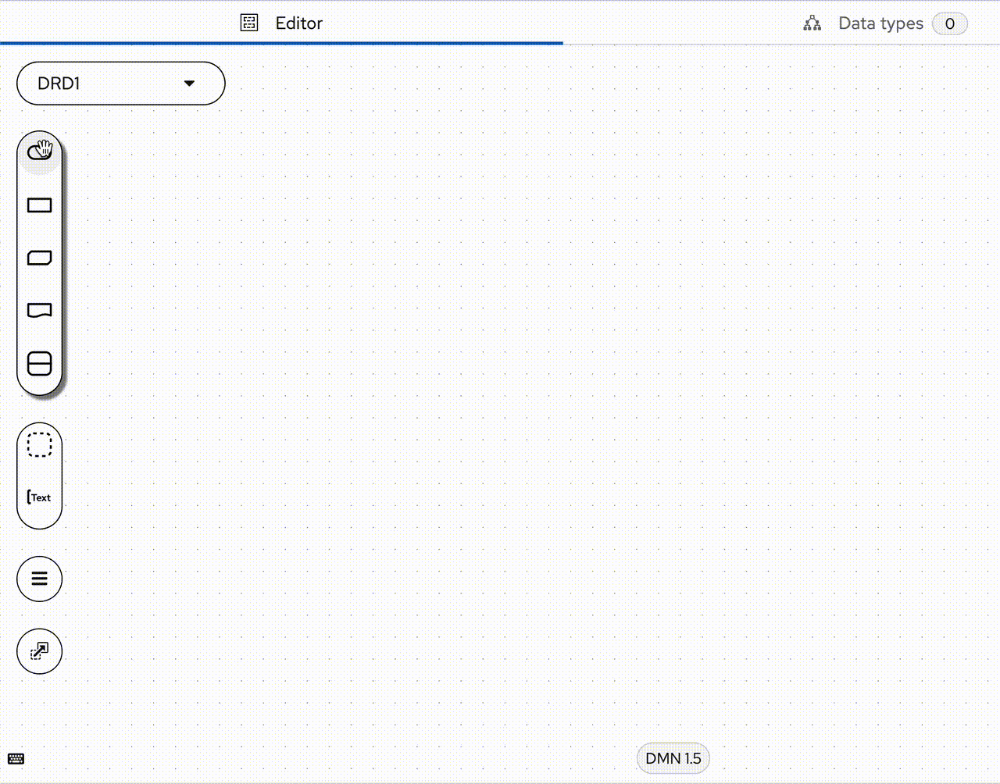Figure 11. Dragging a new Input Data node from the Palette -
Artifact nodes (2b): Using the artifact nodes you have the tools to improve the documentation and visualization of the DRG by modifying the DRD. The Group node creates a visual separation, and the Text Annotation enables to writing short documentation.
-
All DRG nodes (2c): Clicking on it will open a modal providing access to the list of all DRG nodes that are part of the current file. It is possible to filter the nodes by name, and nodes that are part of the current DRD are grayish. Clicking and dragging the node name to the diagram will add the node to the current DRD. More about this can be found in the DRD section.
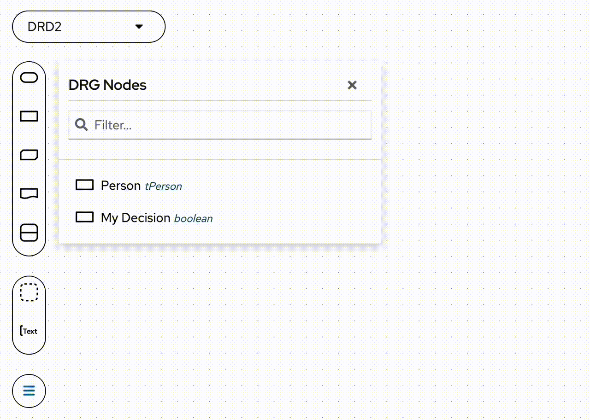Figure 12. Dragging a Decision node from DRG nodes -
External nodes (2d): All nodes that are part of the included models can be found here.
|
Note
|
See the Included models section to learn more about Included models. |
Clicking on it will open a dialog that shows all nodes separated by namespace. You can filter the nodes by name.
You can also see the chosen name for the included model and the DMN file name it originates from. In the above example the name is ex and the filename Another DMN.dmn.
-
The DRD dropdown (3): DRD dropdown enables you to change the currently open DRD, rename it, or change its properties.
-
The properties panel (4): The properties panel lets you manage the properties of a Decision element. Enabling the possibility to add detailed descriptions, and documentation links and tweak the font and shape styles.
-
The overlay panel (5): On the Overlay properties, it is possible to tweak user preferences, which helps with visualization and organization.
-
Snapping: Makes the elements snap into an invisible grid. It is possible to tweak the grid layout by changing the "Horizontal" and "Vertical" values.
-
-
Highlight selected node(s) hierarchy: This option is very useful for complex models where the user needs to verify which nodes are somehow impacting the selected node.
-
Show data type toolbar on nodes: Control if the data type toolbar is visible or not on the Input Data, Decision, BKM, and Decision Service nodes.
-
Enable styles: It is possible to turn on/off the node styles. It is important to notice that this option will not change the file, only the visual representation.
-
The auto layout (6): The Autolayout is still a beta feature. It will automatically organize your model by arranging related nodes closer to each other.
-
The visualization controls (7): The visualization controls give the user the option to zoom in/out from the model, to make the viewport fit the current model, or to lock any interaction.
Node
This section describes all node features, using a Decision node.
Node name
The node name is validated for uniqueness. The editor does not allow you to rename a node to a name that is already being used by another node. Empty names are also invalid. Trying to rename a node to an invalid one will cause it to revert to its previous name. The only moment you can have nodes with the same name is when you create two or more nodes of the same type without renaming them. The following example illustrates two Decision nodes that were created without renaming and an Input Data node where we try to rename it to New Decision, and after it to an empty name.
Node type
Nodes that have a data type, show this information on top of the node. It is possible to change the node data type using the dropdown menu, or even access a custom data type to have a better visualization of the type. More about the Data Types are covered in the B section.
New relationship
It is possible to create a new requirement or association relationship from the target node to another node respecting the DMN specification. The available options vary from node to node.
New connected node
It is possible to create a new connected node from the target node. It will create a node with the respective relationship. The available options vary based on the node type and respect the DMN specification.
Edit node
The Edit button is only available for the Decisions and Business Knowledge Model (BKM) nodes. Clicking on it opens the DMN Boxed Expression Editor with the node expression. The Boxed Expression Editor has access to the DRG context, and is powered by an auto-completion tool, which helps you to build expressions.
Properties panel
Clicking on this button will open the Properties Panel of the node. On this panel, you can check and edit the node name, type, description, allowed answer, documentation links, font styles, and shape styles. You can also check the node ID, for more information see the Properties Panel section.
Resize handler
You can click and drag he small arrow to resize the target node. Each node has a minimal width and height.
Decision Service
The Decision Service node, similar to the BKM node, is useful for reusing logic. You can also use it to wrap and structure a larger set of Decision nodes while producing a single output.
-
Output decisions (1): These decisions (Decision A and Decision B) results will be present in the Decision Service output. The number of nodes in this section (and their Data Types) determines whether the Decision Service will be a Simple or Complex Data Type. In case of multiple items in the Output decisions section we are sure the Decision Service output is a Complex type. In case of a single item in the Output decisions section the Decision Service output depends on the type of the item.
-
Encapsulated decisions (2): These decision (Decision C) results will be not present in the Decision Service output. They will be used only for its computation.
-
Input decisions (3): These decisions (Decision D) are parameters for the Decision Service execution. You need to provide their values during Decision Service invocation.
-
Input data (4): These inputs (Input Data One, Input Data Two and Input Data Three) are parameters for the Decision Service execution. You need to provide their values during Decision Service invocation.
-
Invoking this Decision Service in FEEL (5): Is an example of the Decision Service invocation expression with its parameters in correct order. To change the parameters order, you can drag and drop items from the Input decisions and Input data sections.
In the Decision Service node, there is a divider line in the middle. The divider can be dragged to make output or encapsulated sections the required size.
|
Note
|
The Decision Service node needs to be selected in order to see its context menus. You cannot just hover over the Decision Service node as you can with other DMN node types. |
Unknown node
Unknown node is a node with an invalid DMN element reference(dmnElementRef).
This node cannot be correctly rendered as the reference cannot be found in the current model.
It is replaced by a placeholder node.
Reference (1) is the dmnElementRef value that could not resolve to a node.
The editor does not provide a feature to change this value.
To change this value, open and edit the file manually outside the editor.
The dmnElementRef has a QName value, with the namespaceDeclarationName:nodeId format.
For elements that are referenced on the current namespace, namespaceDeclarationName is not present, which means the dmnElementRef will have the nodeId format.
The namespaceDeclarationName part should be equal to the declaration name of the included model namespace, which must be included on the Included models tab.
The nodeId should then refer to one of the nodes from the included model.
DRD
The DMN Editor provides an improved experience with DRDs. In the image below you can see an overview of the functionality.
Clicking on (1) will open the DRD dropdown. To edit the DRD name, you can click on its name and type the new desired name. On (2), you can create new DRDs, which will automatically change to a new empty DRD. (3) is the list of DRDs on the DRG. Finally, (4) is the DRD options of the selected DRD.
In the example above, the user has created a new DRD and named it DRD2, which we can see on (1). Clicking on (2) will open the DRG nodes (3). In this example, the “My Decision” and “Person” nodes are present on the DRG but not in the current DRD. By clicking on it and dragging it into the diagram the node will be added to the current DRD. This behavior is illustrated below.
It is possible to see that the My Decision became grayish on the DRG nodes modal, as it is now present on the current DRD. Also, it has a “three dot” mark on the bottom of it, which tells us, that this node has dependencies that are not shown on the current DRD. By dragging the “Person” node we can see the three dots disappearing, and an information requirement is automatically placed.
Also, it is possible to change the classic shape to an alternative one, making it more visually cohesive with the BPMN model. This change affects the entire DRD, so it is not possible to have just one node with an alternative shape.
Working with multiple DRDs in the DMN Editor
The DMN Editor supports multiple DRDs within a single model, all referencing a shared DRG. This capability allows decision modelers to organize complex logic into modular, focused views without duplicating underlying logic. Multiple DRDs can coexist in a model and may depict overlapping portions of the DRG.
The DMN Editor supports two visual representations of Decision Services:
-
Collapsed: In the Collapsed Form, the Decision Service is displayed as a single, compact element on the DRD.
-
Expanded: In the Expanded Form, the internal structure of the Decision Service is fully visible, shown within a distinct boundary that visually encapsulates all internal elements.
To ensure clarity and avoid visual conflicts, the DMN Editor enforces the following rules:
-
A Decision Service can only be expanded if none of its internal decisions are already included in another expanded Decision Service on the same DRD.
-
If a conflict exists, the expand button is disabled (greyed out) for the affected service.
-
In a DRD, only one decision service that shares a common decision can be expanded at a time. To expand a different one, collapse the currently expanded service that includes the same decision.
These rules align with the DMN 1.5 specification and ensure a clean, non-overlapping diagram.
Position and size changes to decisions within a Decision Service are automatically synchronized across all DRDs to maintain consistency across multiple DRDs. This ensures that the same Decision Service appears identically wherever it is used, reinforcing visual consistency and reduce modeling errors.
Data types
The data types tab is where all custom data types of the DMN model are placed. The DMN Editor brings a brand new experience for managing custom data types. The following two images show a model without custom data types and the next are the data types of the DMN sample.
Adding a data type
On the empty data types tab the DMN Editor gives us the possibility to create data types in two ways. To create a custom data type from scratch, use the "Create a custom data type" (1) option. To paste a custom data type, you need to have one saved on your clipboard, and then click into the "Paste data type" (2).
Clicking on the Create a custom data type will open the data type editor where you can start creating your custom data type.
A model with at least one custom data type will show a different view. The following image shows all its elements.
-
Filter → It filters the custom data type list (4), showing only the custom data types that match the filter text.
-
Add button → Clicking on the add button, a new custom data type will be created.
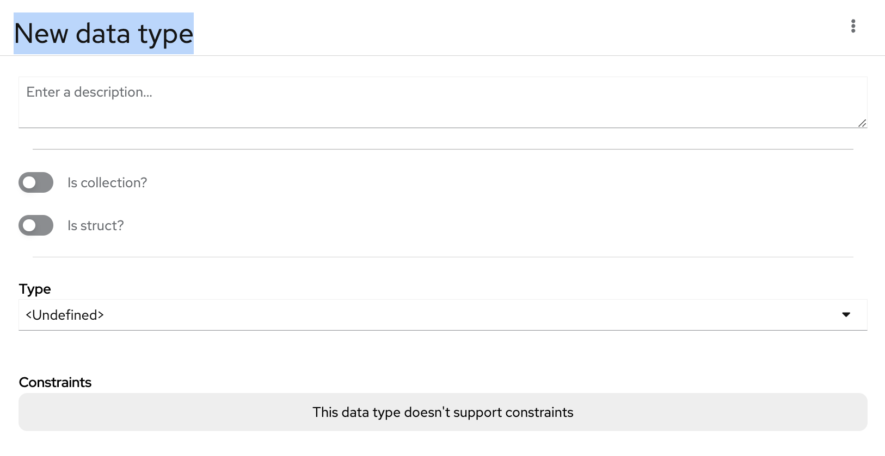Figure 40. Adding data type -
Add options → Gives the possibility to paste a custom data type that was previously copied to the clipboard.
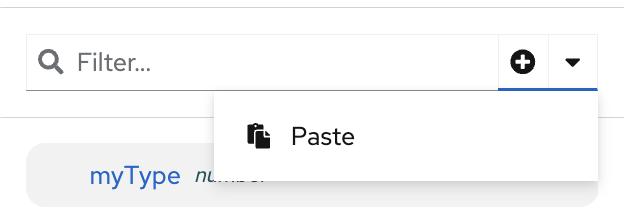 -
Custom data type list → Shows a list of all custom data types of the current and external models.
-
Name → The custom data type name. is validated for uniqueness, ensuring that a custom data type cannot be renamed using a name already being used by another data type.
-
Custom data type options → Provides the option to delete or copy the data type to the clipboard. Also, it shows the custom data type id.
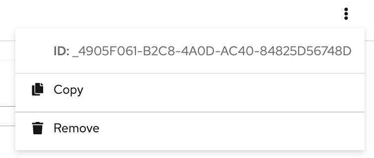 -
Description → Provides the option to write a more detailed description of the custom data type.
-
Is Collection → Change the custom data type to a collection.
-
Is Struct → Change the custom data type to a struct. By making this change, it will show off the struct properties.
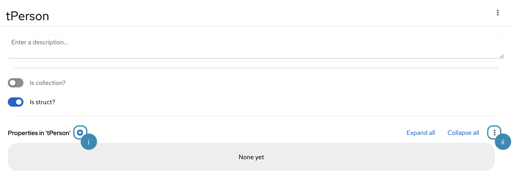Figure 41. Struct data type without properties
-
Adds a new property to the struct data type. A structure with properties will have a few more elements to pay attention to.
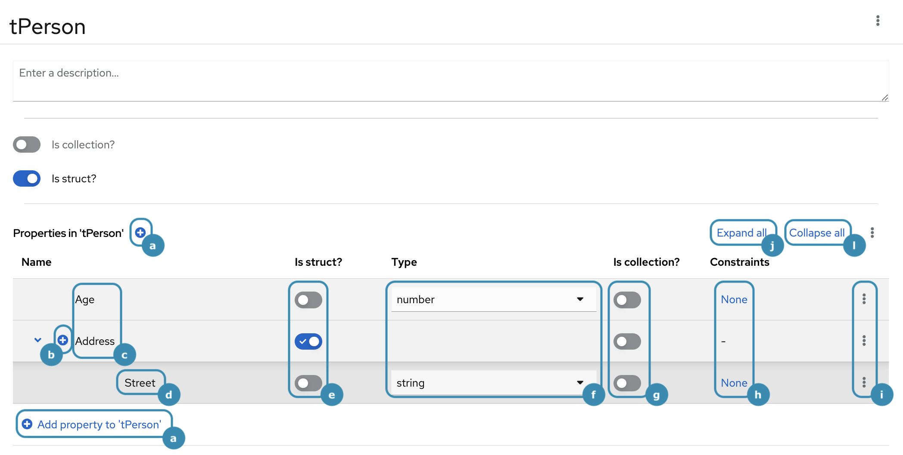Figure 42. Struct data type without properties
-
Adds a new property to the struct, but now we have an additional button on the bottom of the list.
-
For nested structs, this button will add a new property to the nested struct.
-
The names of the properties.
-
The nested properties name.
-
Tells if the struct properties are nested structs.
-
The type of the struct property.
-
Tells if the struct properties are collections.
-
The struct properties constraints. By clicking on it, it will open the property data type, enabling you to edit it. By opening the struct property, navigation appears on top of it, making it easier to access and visualize the hierarchy.
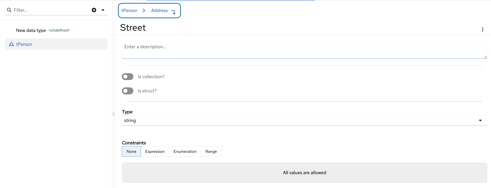Figure 43. Struct property navigation -
The struct property options. We have the option to open a detailed view of the property. The "Extract data type" option creates a new custom data type with the property name. The copy, cut, and remove are straightforward.
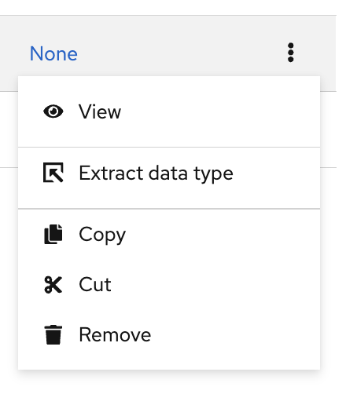Figure 44. Struct property options -
Expand all nested structs.
-
Collapse all nested structs.
-
Adds a new property by pasting a custom data type from the clipboard.
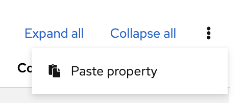Figure 45. Struct data type without properties
-
Base type → The base type of the custom data type. Its options are the base, custom, and external data types.
-
Constraint → The base type constraints. We have the expression constraint which accepts a FEEL expression, the enumeration which creates a list of possible values, and the range which creates a range of possible values. The last two create the equivalent FEEL expression as well. Depending on the base type, the enumeration and range will not be available.
Included models
By default there are no included models and clicking the last button on the node palette External nodes displays an empty dialog.
You can include any DMN and PMML models that are stored in the current workspace using the Include Model button in this palette.
(1) all models is the current workspace name indicator, and in this instance it is the workspace name used in this demo. You can choose any workspace name.
(2) Model is a dropdown that will list all DMN and PMML models from the all models workspace.
(3) Name is a namespace we give to the included model, which is used for referencing included nodes and data types.
|
Note
|
With DMN 1.5 if you leave this empty the default namespace feature is used. |
(4) Include model is the button that confirms the include operation. Upon confirmation, each selected model will be displayed as a card.
(1) indicates the number of included models in your model. The number 3 indicates three included models.
(2) is a card displaying details of the included model.
(3) is the namespace given to the included model. The namespace includedLogic can be changed by double-clicking on the value and typing a new namespace value.
(4) gives an option to remove the included model.
(5) is a card displaying an included model not found in the current workspace.
Using Nodes from an included model
Once the model has been included as described above, you can switch back to the Editor Diagram and click the External nodes button in the left palette to display a card for your included models. You can drag required elements from the list of nodes as shown in the graphic below.
DMN Editor (classic)
This section covers the DMN Editor (classic).
-
DMN Editor tabs → Here you can switch between the four screens that compose the DMN Editor.
-
Editor → Will display your DRG and DRDs you select. This is where you edit your DMN model and create relationships between its nodes.
-
Documentation → Will display a downloadable PDF containing the specification of your Decision.
-
Data Types → Lets you manage the Data Types that are part of your Decision.
-
Included Models → Lets you manage other Decisions you linked to your current Decision. Including a Decision lets you reuse nodes and Data Types from it.
-
-
Search button → Lets you search specific elements of your Decision.
-
Side panel strip → Lets you select which side panel you want to toggle. From top to bottom, those are the available panels:
-
Navigator → Displays all the elements of your Decision organized by DRG and DRDs, and types.
-
Properties → Lets you manage the properties of a Decision element.
-
Preview → Displays a minimap of your DRG.
-
-
Node palette → From here you can select nodes and drag them into your DRG or DRDs.
-
Keyboard shortcuts panel toggle → Clicking here toggles a panel with information of keyboard shortcuts available on the DMN Editor.
The DMN Editor lets you develop Decisions and Business Knowledge Models (BKMs) using the DMN Boxed Expression Editor. Drag a new Decision or BKM node to the DRG and open it with the DMN Boxed Expression Editor.
Decision and Business Knowledge Model on the DMN Editor, side by side, showing their Edit button, that brings you to their implementations inside the Boxed Expression Editor, on BAMOE Canvas.
Selecting Edit on a new Decision will bring you to an empty Boxed Expression. On a new BKM you will have an empty Boxed Function. The implementation of this Boxed Function can be of any type.
Selecting a Boxed Expression type will update the implementation of the Decision or BKM.
Here is an example Decision Table.
And a BKM with a Literal implementation.
The Boxed Expression Editor is very capable, and can handle complex implementations. It is built based on the same Table component BAMOE Canvas uses on DMN Runner.
Developing Decisions through DMN files is a complex subject and has many intricacies that are out of the scope of this document. See DMN-specific material, like the Decision Model and Notation (DMN) specification itself.